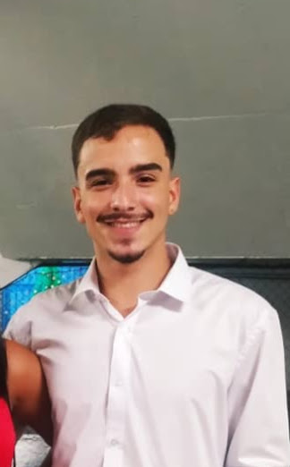

18 anos, Masculino
Rua itaperuna, 29102-110, Espirito Santo - ES
(27)98876 - 9020
Email:
Rafaelppassos25@gmail.com
Linkedin:Rafael Pereira
Colaborar com ambientes de trabalho onde possa colocar em prática meus conhecimentos.
Experiência como colaborador na Empresa Politintas, sendo assim com experiência na disciplina e determinação dentro de uma empresa.
Ensino Médio completo
Cursando - Sistema de Informação
- Universidade Vila Velha - 2022 a 2026
Supervisão e tomada de decisão;
Liderança;
Trabalho em equipe;
-
Microsoft Visual Studio Code, GitHub e Git
-
Pacot Office
- PhotoShop
Inglês Básico